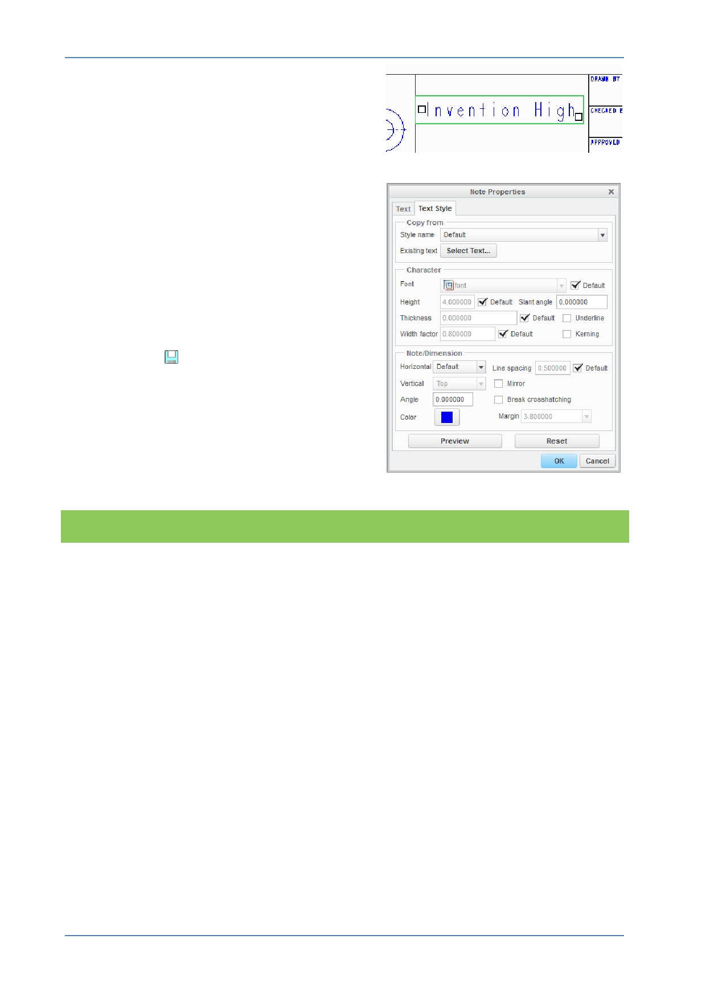

PTC Academic Program
2. Edit annotation text:
Click to select the text. A green rectangle
surrounds the text to show it is selected.
Right click on the text and, from the pop-
up menu, select Properties .
You can edit the text in the Text tab in the
Note Properties dialog box.
Click on the Text Style tab to see other
parameters you can change.
Click OK to close the dialog box.
3. Click Save
to save your work.
What have you learned?
Adding annotations - Note.
Note text – positioning, adding text, moving, editing and formatting.
© 2012 PTC
Creo Parametric 2.0 Primer
Page 100